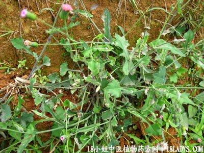

(本文解释权归中药材天地网兄弟站-18小姐中医植物药方网所有,如需转载请注明出处)
羊蹄草(中药材植物名:一点红)(植物科目:菊科)

别名：红背草、紫背草、假芥兰、花棬草、声色草、布芬草、红背紫坛、炮仗草。
植物名：一点红。
生长环境：本品为一年生草本。为田野间或路旁常见的野草。
分布：广东各地均有。热带亚洲及非常亦产。
入药部分：全草。
采集期：夏、秋。
自采地点：基边、菜地、山区。
性味：性凉、味苦淡，无毒。
功能：清湿热、润肠、凉血、生肌。
主治、用量和用法：1、湿热肚痛：干用5钱至1两，清水煎服；2、下痢：用法同上；3、乳痈、毒疮：生用叶部，捣烂外敷患处；4、眼热：干用5钱至1两，清水煎服，或加蜜枣、同煎服。
（方歌）羊蹄草治症类多，湿热肚痛下痢瘥，毒疮乳痈外敷好，眼热还煲瘦肉汤。
验方：（治乳痈方）1、生竹节草4两，捣烂，炖酒饮，药渣外敷患处；2、羊蹄草6两，捣烂，炖酒饮，药渣外敷患处；3、蒲公英、如意草、羊蹄草、水翁叶、竹节草各用鲜叶2两，捣烂，煮酒外敷。
（方解）乳痈因乳腺不通，或受热毒而成。以上三方，俱有疗效。一方：生竹节草能散乳疮热毒，用酒炖服，有行气凉血热毒之功。二方：羊蹄草比竹节草凉性较轻，故用量宜重。三方：适用于体虚患热毒不堪寒凉攻伐者，故用于外治，如体实二能内服外敷并用，其效更佳。
（方歌）乳房瘀热结成痈，羊蹄竹节或蒲公，水翁叶同如意草，复方独用总能松。
参考资料：《广州市中医验方选集节第一集》介绍治甜尿验方：鲜羊蹄草5钱，猪粉肠2两，净水煎服，连用有效。又介绍治乳疮验方：生羊蹄草4两、生水翁4两，擂烂，加少量酒炖40分钟，药汁内服，渣外敷。
(本文解释权归中药材天地网兄弟站-18小姐中医植物药方网所有,如需转载请注明出处)